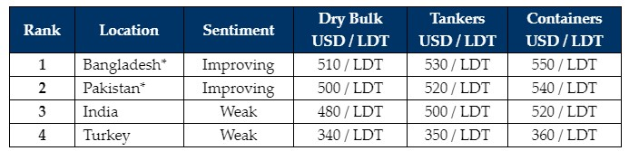

inWeekly Demolition Reports12/02/2024

Despite the Pakistani & Bangladeshi markets stabilizing & displaying a far greateraggression at the bidding tables over the last 5 weeks (that too at ever improving rates), in addition to the long awaited Chinese New Year holidays that have finally descended across the world, it has been a remarkably quieter start to 2024 for ship recycling than many had anticipated.
Elections in Bangladesh have already concluded, and it was Pakistan’s turn this week, with mobile phone & data services apparently being suspended across the nation due to violence, riots, bomb blasts, and even the killings of several innocents being reported. Notwithstanding, Ex-PM Nawaz Sharif has become Pakistan’s PM for the fourth time and these elections were concluded in the same week that former Prime Minister Imran Khan was jailed for corruption (amongst 100s of other prior charges he is currently facing) that resulted in the ongoing violence. Notwithstanding, with the results of the elections now announced, India’s turn is expected in March, subsequently concluding an important quarter of possible change across the Indian sub-continent ship recycling markets.
On the global front, despite Western Forces continually engaging the Houthis in attempting to curtail the widening problem for merchant vessels traversing the regional shipping lanes via the Houthis pervasive (yet senseless attacks), trading markets have remained unseasonably firmer, thereby delaying the historical ‘post-New Year aggression’ from the sub-continent ship recycling markets that the industry has become accustomed to over the years. As a result of, even though Bangladeshi & Pakistani markets have managed to keep sub-continent recycling prices propped up whilst levels & demand from these nations continues to gradually firm, very few workable candidates remain on offer and the highly anticipated first quarter ‘spring’ in recycling seems delayed until Spring (and likely beyond). Moreover, even though India has been the busiest through 2024 thus far (thanks to the slew of MSC containers that were concluded to a select number of HKC yards), volatile local steel plate prices & the Indian Rupee have left Alang Buyers with tentative sentiments and the lowest sub-continent levels on offer. Finally, Turkey quiet as ever in the West, twinning India’s state of performance while on its eternal hunt for tonnage.
For week 6 of 2024, GMS demo rankings / pricing for the week are as below.

With the YEAR OF THE DRAGON, GMS would like to wish ALL our readers, a Happy and prosperous New Year.
📄 Download PDF: Ship-recycling-market-insight-week-06-2024-Enter-The-Dragon.pdfSource: GMS,Inc. ,https://www.gmsinc.net/gms_new/index.php/web